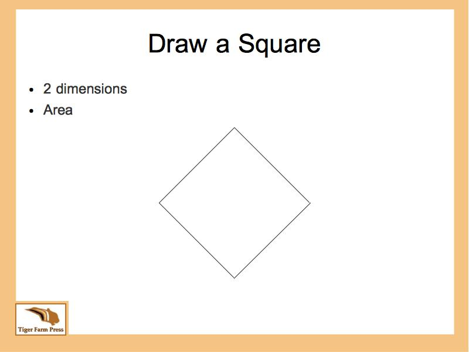
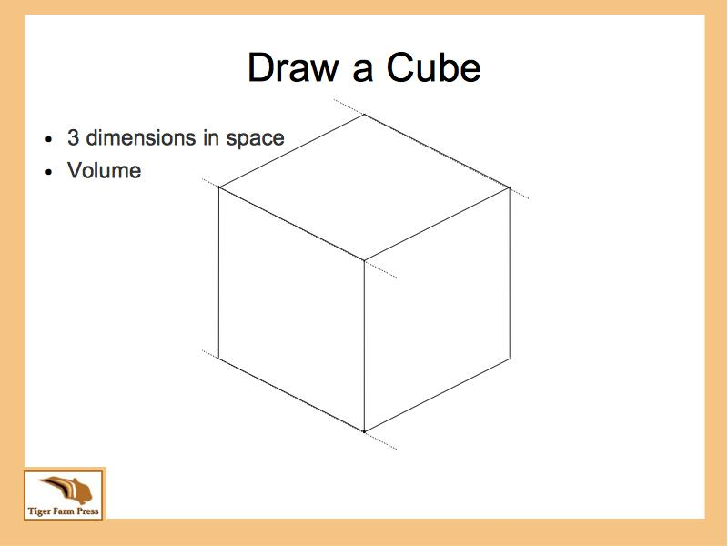
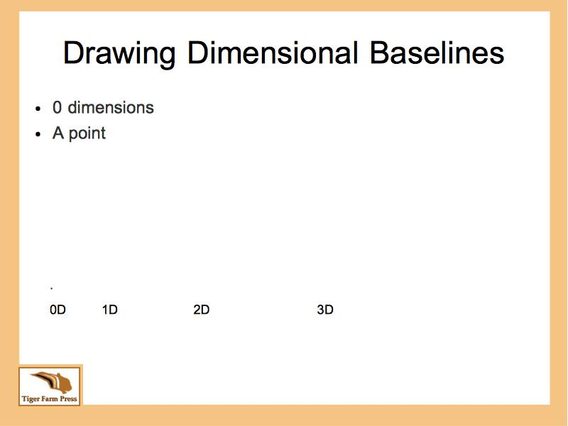
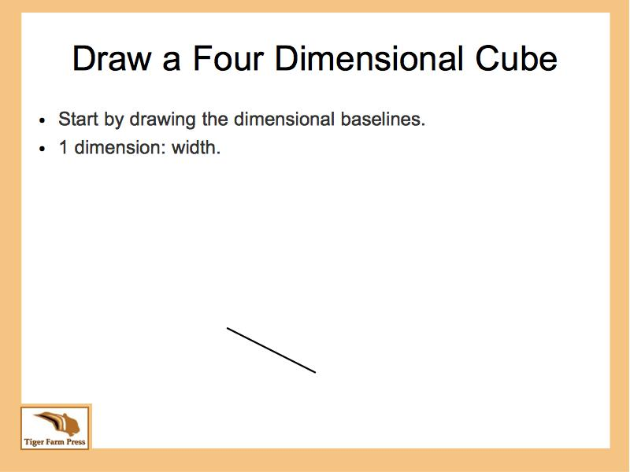

How to Draw a Four Dimensional Einstein Cube
Einstein is famous for his work in spacetime: 3 dimensions of space plus one dimension of time; for a total of 4 dimensions. Since it's been a hundred years since Einstein first published his paper on relativity. Everybody should be able to draw a 4 dimensional cube.
Einstein said,
"It can scarcely be denied that the supreme goal of all theory is to make the irreducible basic elements as simple
and as few as possible without having to surrender the adequate representation of a single datum of experience."
Or, simply restating Einstein's quote for the purpose of drawing an Einstein Cube,
"Systems should be complete and simple as possible."
Complete in that the final drawing is a 4 dimensional cube.
The system being simple as possible, as in the fewest and simplest amount of steps.
If I truly have come up with the fewest, simplest steps, then people will select my instructions over others. Because others also favor the basics. Occam's razor favors the fewest. Lao-Tzu favors simplicity.
Occam's razor says,
When presented with competing hypotheses that make the same predictions,
one should select the solution with the fewest assumptions.
Lao-Tzu, the author of the Tao Te Ching, named simplicity as one of his top three virtues. Compassion and modesty being the other two.
Drawing Techniques
It only takes two core techniques to draw an Einstein cube. Once you have master those, it only takes two instructional steps to draw a four dimensional cube.
1. The first technique is the drawing of squares. Or to be more precise, the drawing of each square side of a cube. The reason this is important is because all sides of a cube are square. This needs to be second nature when you go onto dimensions higher than 3.
2. The second technique is drawing dimensional baselines.
Sorry, you can't Google "dimensional baselines" to find the method.
However, I will show you, here.
Draw a Square
Key points when drawing a square,
Start by drawing the dimensional baselines.
Opposite sides of a square are parallel to each other.
First ---
Previous --- Next

Draw a Cube
Key points when drawing a cube,
Start by drawing the dimensional baselines.
All sides of a cube are square.
First ---
Previous --- Next

Draw Dimensional Baselines
Key points when drawing dimensional baselines,
The quantity of baselines is the same quantity of dimensions.
The baselines are guidelines to draw the rest of the cube or square.
First ---
Previous --- Next

Instructional Steps to Draw a Four Dimensional Cube
Okay, you can draw a square and a cube from their dimensional baselines. You're now ready to draw an Einstein cube.
1. Draw the cube's dimensional baselines.
2. Draw the cube's square sides using the dimensional baselines, as guidelines.
The trick of course, is how to draw the 4 dimensional baselines when all you've ever drawn in your life time, is at most, 3 dimensions.
First ---
Previous --- Next

Tokyo's Shibuya crossing on a Saturday afternoon.
Reference
"Everything should be made as simple as possible, but no simpler."
A quote often attributed to Albert Einstein.
See the Quote Investigator
for further details.